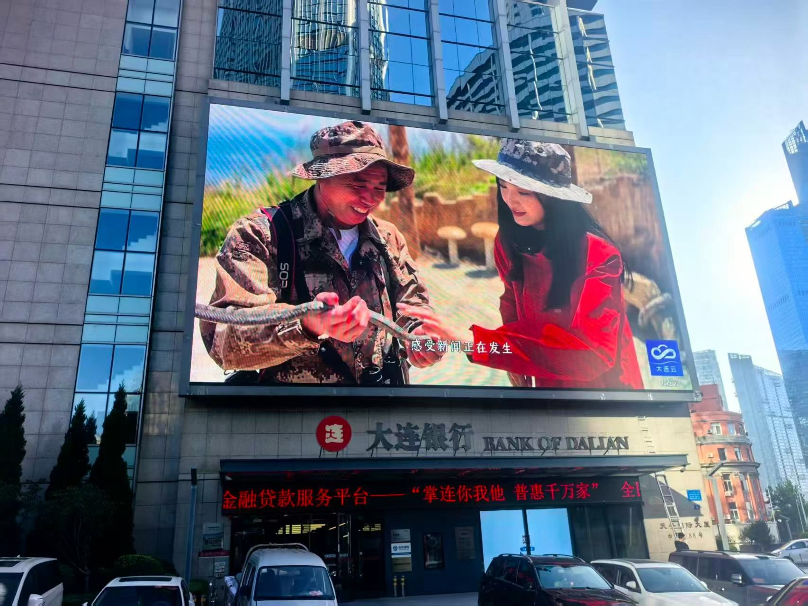

By David
What is LED display content scheduling? LED display content scheduling is the system that decides what plays on a screen, when, and in which zone. It turns a set of content files into a reliable playlist that runs without an operator watching. Good scheduling keeps a screen fresh, on-brand, and correct day after day. This 2026 guide explains how to set up and run it.
A screen with great hardware and poor scheduling looks stale, shows the wrong content at the wrong time, or goes dark because nobody updated the playlist. Scheduling is the operational layer that keeps an LED display useful long after the novelty of the installation has passed.
This guide is written for owners and operators who run LED screens daily. It covers playlists, timing, multi-zone layouts, remote updates, and the habits that keep content reliable across many screens.
A playlist is an ordered set of content items with a duration for each. A timeline adds scheduling, so different playlists run at different times of day or days of the week. Most LED control systems support both, and the right choice depends on how the screen is used.
| Element | What It Does | When to Use It |
|---|---|---|
| Playlist | Ordered content with durations | Simple looping screens |
| Timeline | Playlists tied to time and date | Dayparted and seasonal content |
| Zone | Split the screen into areas | Mixed content layouts |
| Trigger | Content fired by an event | Live and interactive screens |
For a simple screen, a looping playlist is enough. For a screen that shows breakfast content in the morning and dinner content at night, a timeline is needed. Choosing the right structure at the start avoids rebuilding the content plan later.
Timing makes content relevant. A screen in a transport hub needs different content at rush hour than at midnight. A retail screen needs different content on a sale day. Dayparting, the practice of splitting the day into parts with different content, keeps a screen appropriate to the moment.
Build the content plan around the audience present at each time. The schedule should also match the screen's brightness plan, so the content and the brightness change together through the day. A bright daytime playlist running at night defeats the purpose of auto-dimming.
Large screens often show more than one thing at once: a video, a sponsor panel, a clock, and a ticker. Zones let the screen be split into areas, each with its own content and schedule. A zone layout lets the screen carry many messages without any single one dominating.
Design the zone layout around the viewing distance and the content. A ticker is readable at the bottom of a screen; fine detail is not. Sponsor panels should be large enough to be seen, not squeezed into a corner. The layout is a design decision, and it should be tested from the audience position.
Operators who run many screens need to update content remotely. A central content system lets one team publish to every screen, schedule updates in advance, and confirm that each screen received the new content. This is essential when screens are in different cities or countries.
| Method | Best For | Trade-off |
|---|---|---|
| USB update on site | Single, rarely changed screens | Manual, slow, error-prone |
| Network update | Multiple screens, one site | Needs network access |
| Cloud content system | Multi-site fleets | Subscription and connectivity |
| Scheduled push | Regular content changes | Needs reliable scheduling |
Whichever method is used, confirm that the screen actually received and played the new content. A push that fails silently leaves a screen showing old content, and nobody notices until a client complains. A confirmation or a screenshot from the screen closes that gap.
Content must match the screen's resolution and aspect ratio. Content that is stretched or cropped looks amateur, and content at the wrong resolution wastes the screen's capability. Define a content template for the screen's exact size so every contributor produces compatible files.
Compression and frame rate matter as much as resolution. A heavily compressed file can show banding and blocking on a large screen, and a file at the wrong frame rate can stutter. Test content on the real screen, because a file that looks fine on a laptop can look poor on a big wall.
Scheduling must survive failures. If the network goes down, the screen should keep playing its last good playlist rather than going dark. If a content file is missing, the system should fall back to a default rather than show an error. Plan the failure behaviour as carefully as the normal behaviour.
Test the fallbacks before they are needed. Simulate a network outage and a missing file and confirm the screen behaves as intended. A screen that goes black at the first hiccup is worse than one that keeps playing acceptable content until the fault is fixed.
Content that goes straight from a designer to the screen invites mistakes. A simple approval step, where the person who owns the screen checks the content before it plays, catches wrong prices, spelling errors, and brand problems before the public sees them. The approval step can be as light as a message and a confirmation.
Define who can publish and who can approve, and keep those roles separate for screens with a brand or legal stake. A workflow with a clear owner and a clear approver is what prevents the embarrassing slip that plays to thousands of people because nobody checked it.
A scheduling system can log what played and when. That log answers questions such as whether a campaign actually ran, whether a sponsor's content appeared, and whether a screen was on during its contracted hours. Proof of play is valuable for advertising and for disputes.
Proof of play also helps operations. If a screen was dark for two hours, the log shows it, and the team can investigate the cause. A screen with no logging can only be trusted on word, which is not enough when a contract or a client depends on what actually appeared.
Write the content operations into the project with the scheduling system, the update method, the fallback behaviour, and the logging. Decide who owns content, how often it changes, and how updates are confirmed. The technical system and the operating process should be planned together.
LED display content scheduling is what keeps a screen alive after installation. Owners who plan the playlists, the timing, the zones, and the fallbacks get a screen that always shows the right content, updates reliably, and never goes dark because nobody remembered to change it. The effort is small at the start and saves a great deal of trouble later, when a screen that is forgotten quickly becomes a screen that is ignored.
Keep the content plan documented and handed over with the screen. The next operator needs to know how the playlists are structured, who approves content, and where the files are stored. A content system that depends on one person's memory breaks the moment that person is unavailable, which is exactly when a screen needs to keep running.
Review the content plan on a schedule, such as every quarter. Audiences change, offers change, and content that suited last season may look tired this season. A short review keeps the screen relevant and catches stale content before the public notices that the same message has been running for months without change. Put the review in the calendar, because without a fixed date it never happens.

For this requirement our range covers it directly: the M-PRO indoor series (16:9 cabinet) and the RH-PRO fine-pitch COB.
Tell us how many screens and who updates them, and we will recommend the scheduling and update system you need.
Request Content PlanChat on WhatsApp